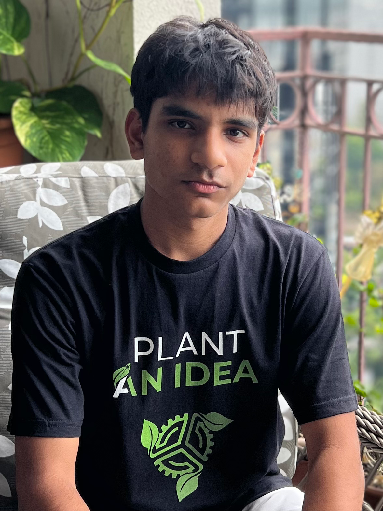

About
About the Founder

Ishaan Puri is a Grade 10 student at Singapore American School, deeply passionate about STEM, sustainability, and social entrepreneurship. His journey into agricultural innovation began when he participated in a program by DASRA, an Indian venture-philanthropy fund. During this experience, he gained profound insights into the challenges faced by Indian farmers — particularly the lack of innovation due to social perceptions of farming as a low-status profession.
Motivated by his passion for sustainability and the urgent need for transformation in agriculture, Ishaan founded Plant An Idea — an initiative dedicated to bridging the technological divide between rural farmers and urban companies. His work aims to improve agrifood systems and increase farmers' livelihoods by addressing the inefficiencies of seed planting. Through this endeavor, he hopes to empower communities and inspire youth worldwide to take meaningful action toward sustainability and social change.
Beyond social entrepreneurship, Ishaan is an avid researcher with a deep interest in quantum computing and artificial intelligence. As a research assistant at the National University of Singapore, he is working on trapping a Beryllium ion. His interests also extend to AI-driven solutions that can revolutionise industries, including agriculture.
Ishaan thrives on academic challenges and building things from the ground up, believing that true change comes from innovation and hands-on problem-solving. While deeply engaged in scientific exploration and entrepreneurship, he also finds time for creative and physical pursuits — he's a drummer for his school's band and enjoys playing tennis.
Connect on LinkedIn